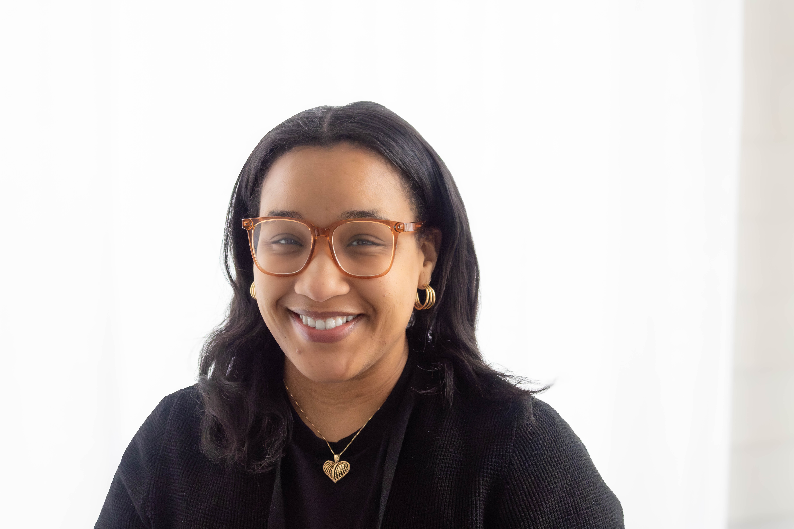

BTR BOARD OF DIRECTORS
DiAndra Alves
Marketing Chair

DiAndra Alves is a dynamic and purpose-driven youth development professional working in the education and nonprofit sector. She previously co-founded Inspiring Souls, where she helped build transformative spaces centered on mentorship, leadership, and empowerment for young people. She now is the Breaking Through Roadblocks T.A.R.G.E.T.S. youth coordinator leading initiatives that equip youth with the confidence, tools, and support needed to overcome obstacles and thrive.
DiAndra continues to advocate for and guide young people with intention and care throughout her hometown of Brockton MA.
Beyond her work in youth development, DiAndra brings a refined eye for creativity and beauty through her entrepreneurial photography business, capturing moments with artistry and meaning. While she pours deeply into her community, she remains equally grounded in her devotion to her family, leading with heart, vision, and integrity in every role she holds.
CONNECT WITH DIANDRA
dalves@breakingthroughroadblocks.org